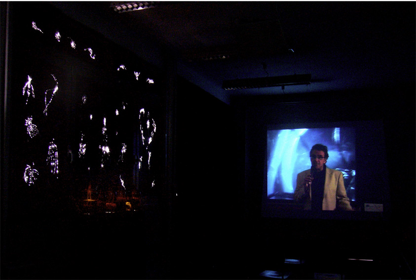

The video in front shows the microtheater-hall at the Natural Historical Museum of Vienna, where the lecture took place (Silitubiflex Obscurum). Here a biologist speaks about the rediscovered animal Silitubiflex Obscurum. The amorph animal lives in the deep mud and moves foreward with its tentacles. Behind the explaining biologist there is a canvas, where the visitor may observe the animal under the microscope. The microscope is standing left hand side, where cameras are directly connected, so the life studied animal is visible for the visitors.
The biologist at the microscope is me, I'm examinig the tiny little animals in a drop of water, some specials of these impressing views are seperatly documented in a second video-projection: Augenergötzung (The Disport Of The Eye).
Back at the installation:
Left hand: black latex painted windows with translucent silicon-animals (quoting the E.Haeckl- decorated black windows at the museum) and illuminated preparation-bottles with very big S.O.'s.
To the right hand, more in the foreground: fotograms of preparations, a lightboxtable with latex, the second video-projection and „blackanimals“.
